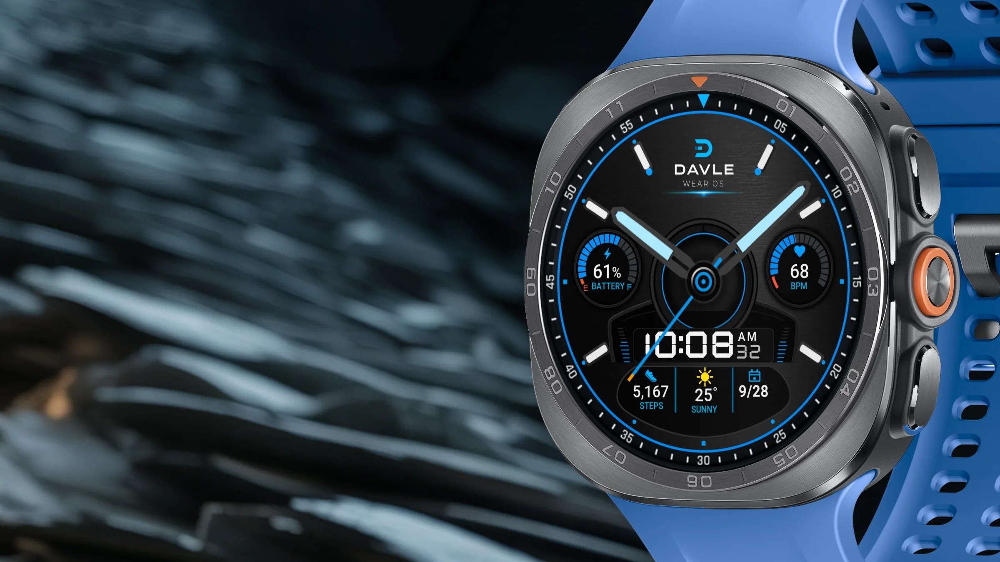
On Google Play
KYANOS
KYANOS reads like an instrument, not a widget. Analog hands sweep over a matte black-metal dial, and a framed LCD readout sits at 6 o'clock.
It needs a round watch with Wear OS 5 or later. Buying on a phone works when your watch is paired: choose the watch at checkout.
- Wear OS 5 or later
- Round watches
- Galaxy Watch4 and newer
- Pixel Watch

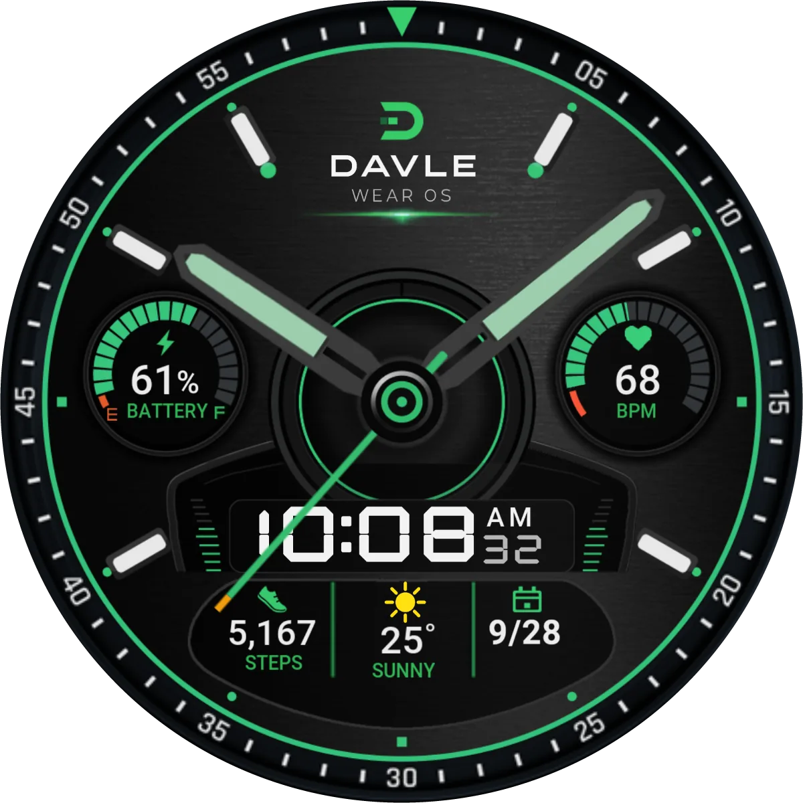
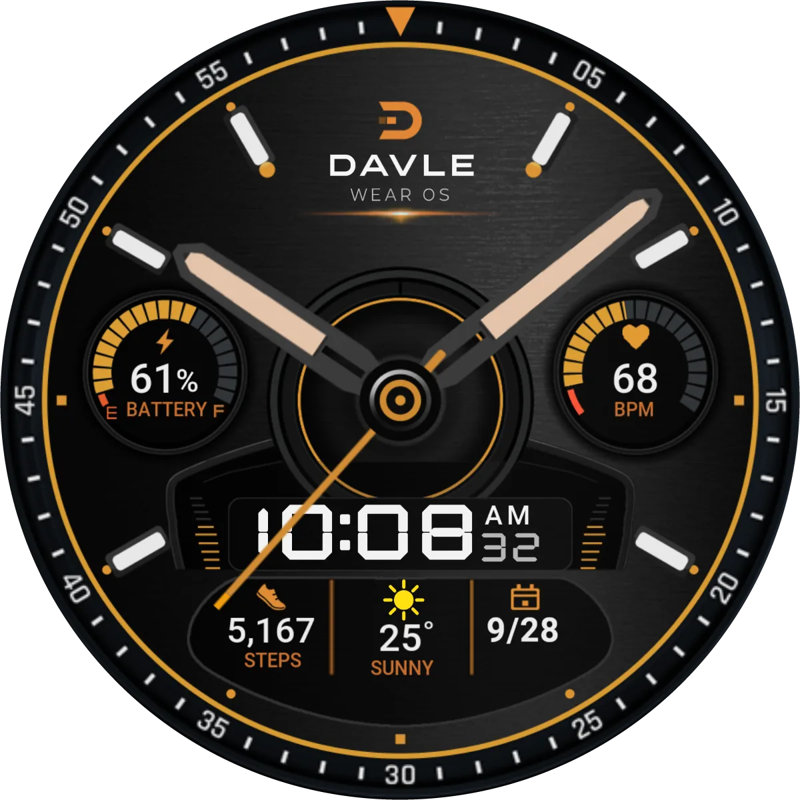
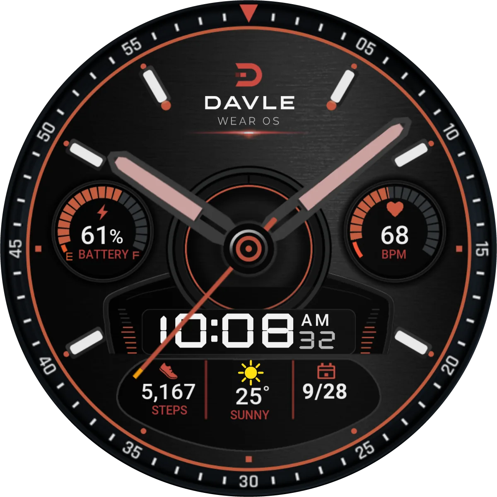
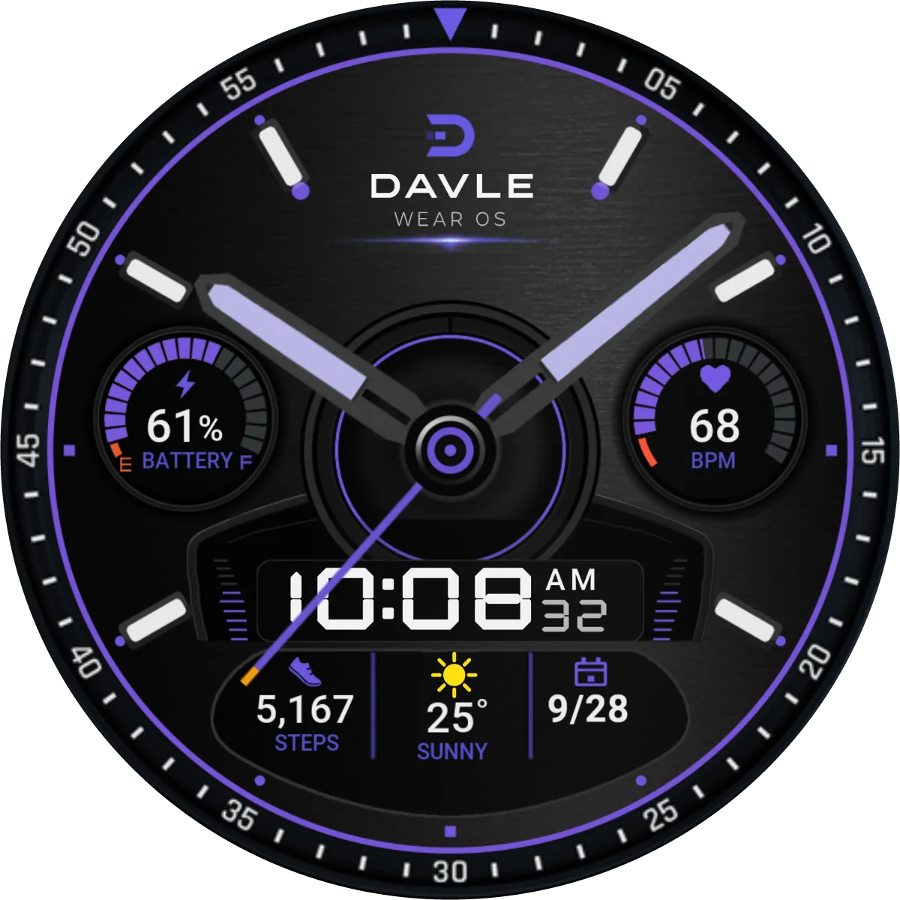
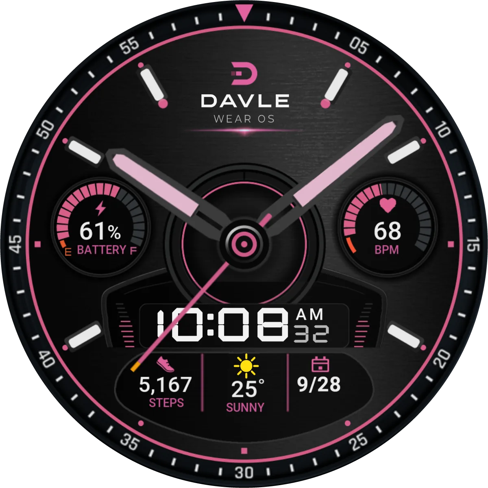
What's on the dial
- Analog hours and minutes, with a second hand that sweeps smoothly instead of ticking
- Battery gauge at 9 o'clock, marked E to F
- Heart rate gauge at 3 o'clock, read live from the watch sensor
- LCD module at 6 o'clock with custom-drawn digits; hours follow your watch's 12- or 24-hour setting
- Step count, weather condition and temperature across the lower row
- One complication slot in the lower row, set to the date by default; it accepts short-text complications
6 colours, one setting
6 accent colors: Blue, Jade, Amber, Ember, Violet and Rose. One accent setting recolors the ring, hands, arcs, labels and icons together. Change it on the watch: touch and hold the face, then Customize.
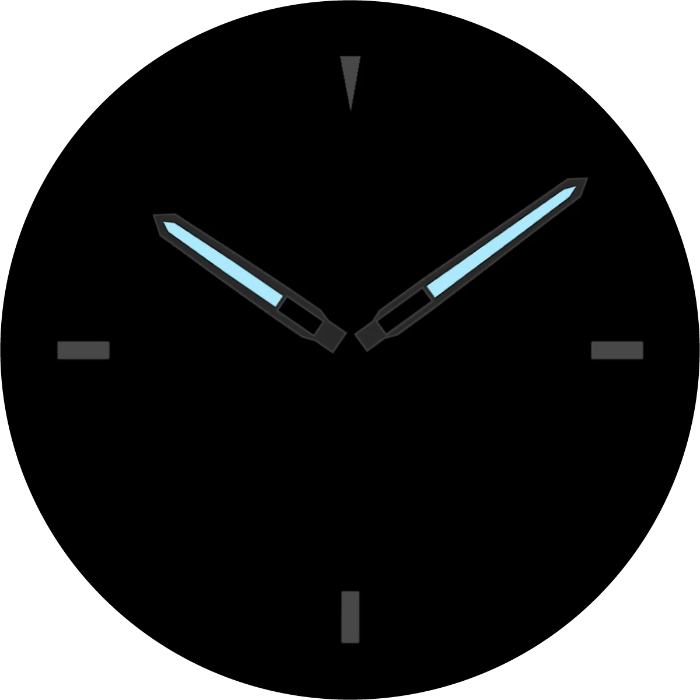
When you lower your wrist
The always-on layer keeps the hands and four minimal hour markers readable.
On the wrist

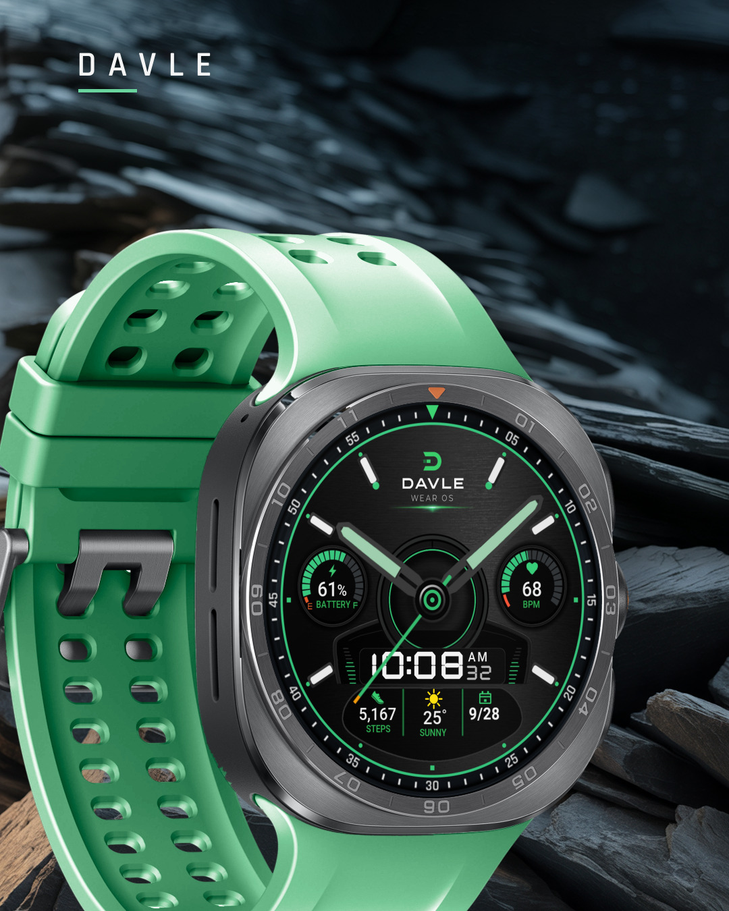
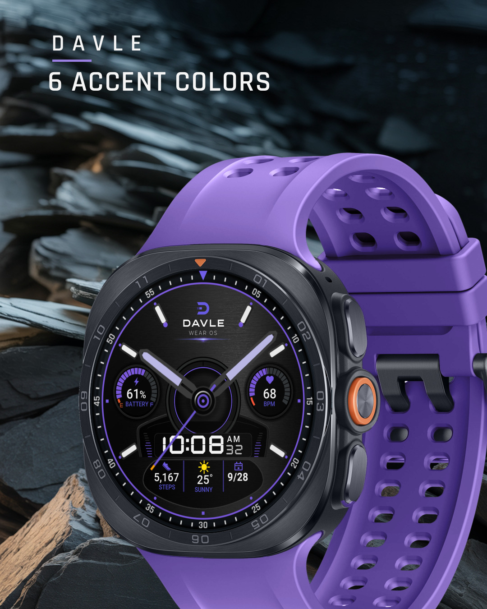
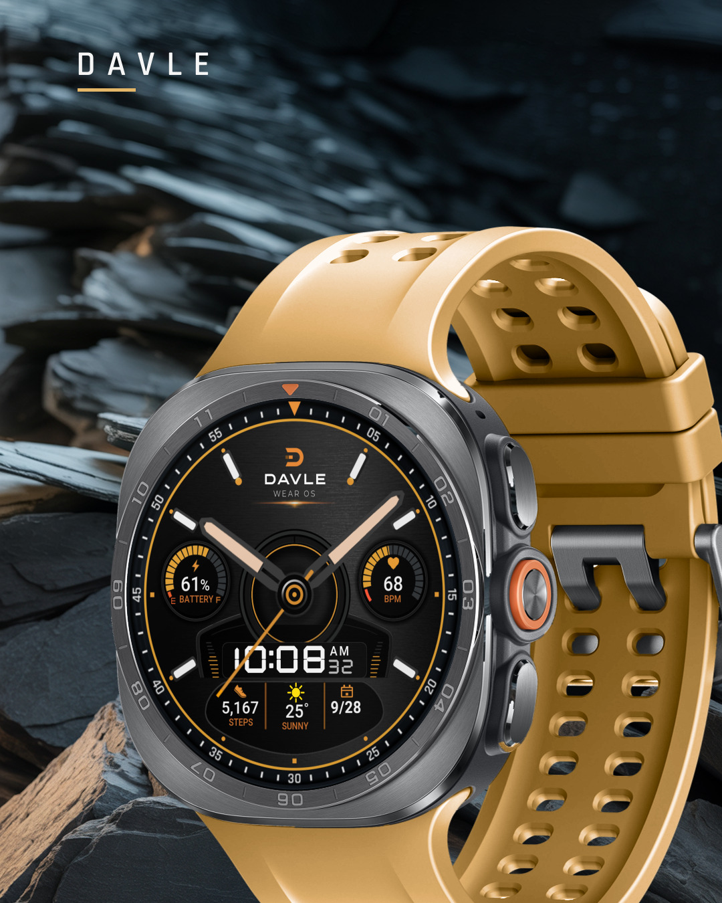
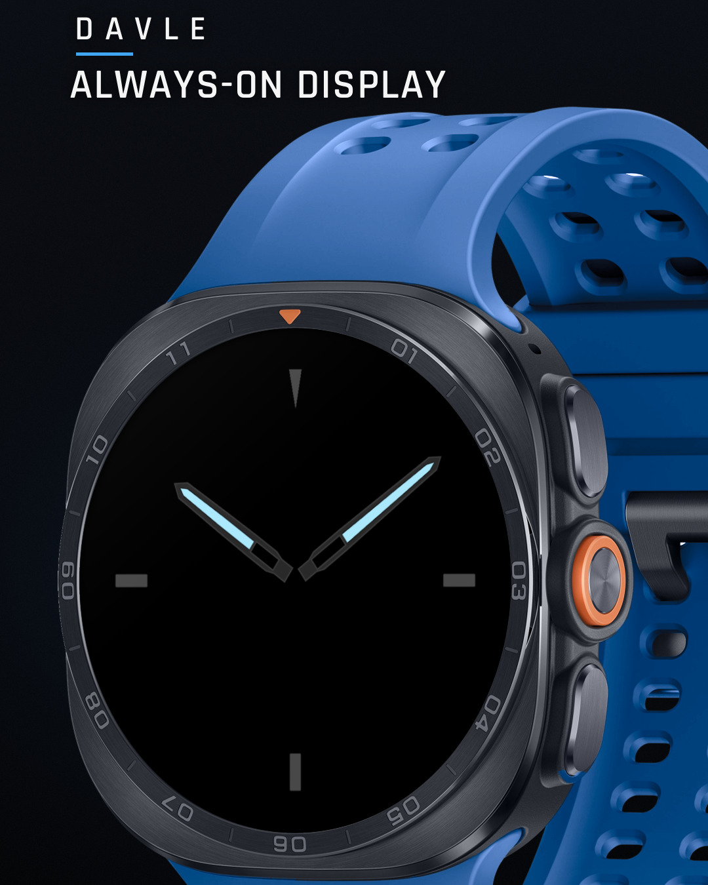
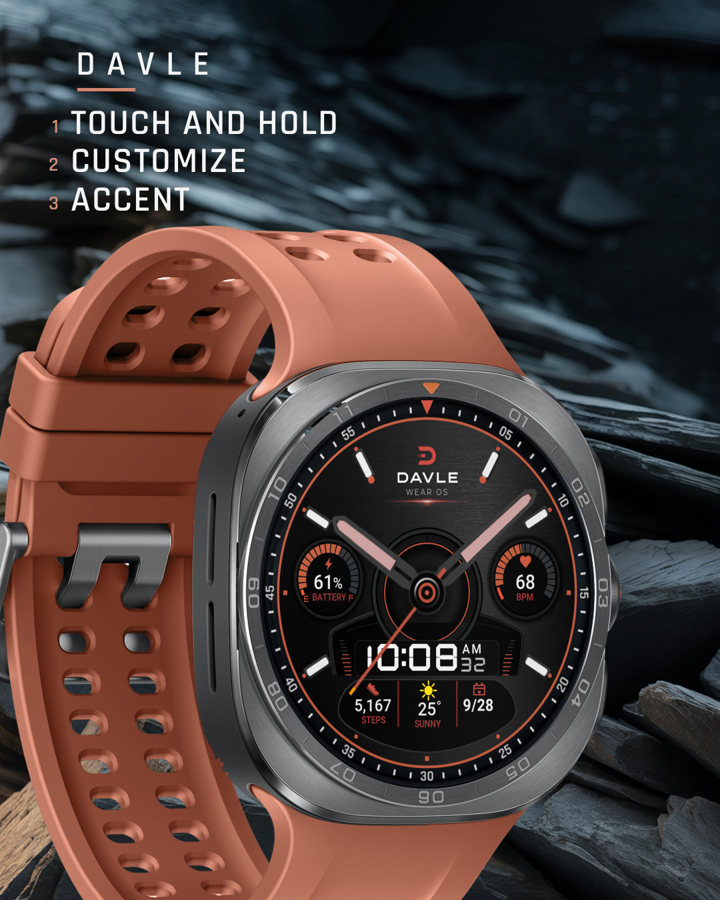
Getting it onto your watch
KYANOS is a watch face, so it lives on the watch. Pick the way that matches where you are.
On your phone, watch paired
- Open KYANOS in the Google Play app.
- If you see an arrow next to the price, tap it and choose your watch.
- Buy. Keep the watch near the phone; it can take a few minutes to arrive.
- On the watch, touch and hold the current face, swipe, and choose DAVLE KYANOS.
No arrow? Your phone does not see a compatible watch on this Google account. Don't buy on the phone yet: use the watch or a computer instead.
On your watch
- Open Google Play on the watch.
- Search for DAVLE KYANOS and install it.
- Touch and hold the current face, swipe to the end, and add KYANOS.
On Galaxy watches you can also touch and hold the face and swipe left to More watch faces.
On a computer
- Open the KYANOS page on Google Play, signed in with the same Google account as your watch.
- Choose your watch in the device list, then install.
- Add the face on the watch: touch and hold, swipe, choose KYANOS.
It's installed but not in my watch face list
Give it a few minutes and keep the watch on Wi-Fi or near the phone. Then touch and hold the current face and swipe all the way to the end. If it still isn't there, restart the watch. Still missing? Write to us with your watch model.
Google Play says it isn't compatible
KYANOS needs a round watch on Wear OS 5 or later. Update the watch software first. Galaxy Watch4, Watch5 and Watch6 need the One UI 6 Watch update. Square watches can't run it.
What does the phone app do?
A small phone app comes with KYANOS. It shows the colours and opens the watch face's Google Play page on your watch, so you can install it there. The watch face works without it.
Customizing in the Galaxy Wearable app doesn't work
Customize on the watch instead: touch and hold the face, then Customize. It is quicker and always shows every option.
Questions
Will it work on my phone?
No. KYANOS is a watch face for Wear OS watches. Your phone can only help you install it.
Which watches can run it?
Round watches with Wear OS 5 or later: Galaxy Watch4 and newer (Watch4 to Watch6 need One UI 6 Watch), Galaxy Watch Ultra, Pixel Watch, and other round Wear OS 5 watches. Not Apple Watch, not Fitbit, not square watches.
How long does it take to reach the watch?
Usually a few minutes after buying on the phone. Keep the watch connected.
Why does heart rate or steps show nothing?
The watch face reads the watch's own sensors. Allow the permissions when the watch asks, and wear the watch for a moment so it can take a reading.
Can I get a refund?
Google Play lets you ask for a refund within 48 hours of buying, from your order history. After that, write to us with your watch model and order number and we'll help.
How do I contact you?
Email studio@davlestudio.com. Include your watch model, so we can answer in one go.